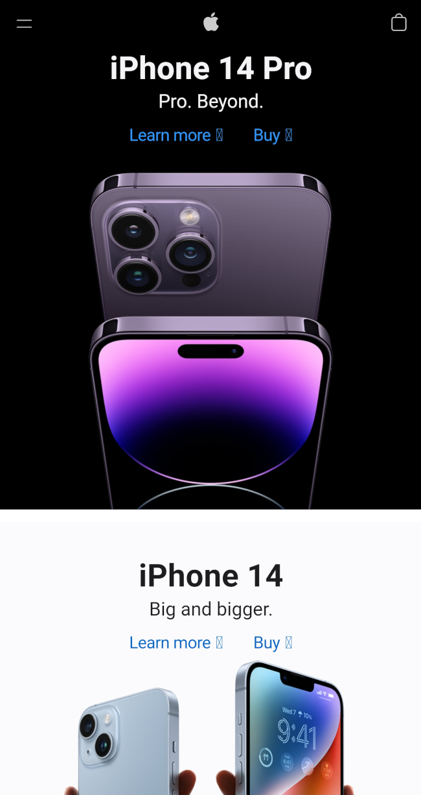

Visual Hierarchy
Pokémon
The Pokémon homepage is an example of visual hierarchy because the text within the red region is divided into two parts. The first part of the text is bigger and white, which draws the eye to this section first, then the eye is drawn to the second block of text, which is smaller and a bit gray. Another example is that the first image is filling the width of the viewport, while the second image is not.
White Space and Clean Design
Apple
The Apple website is the ultimate example for whitespace and clean design. The site uses whitespace around images of the phones to convey a bold and clean aesthetic.
Hick's Law
Best Buy
Best Buy is a good example of Hick's Law, because even though the home page is chock-full of the categories of items it has for sale, it increases the decision time logarithmically. Thus, without grouping up the options by alphabet or other distinction, it forces the user to spend more time on the page while either making a decision or finding the button for where they want to be.